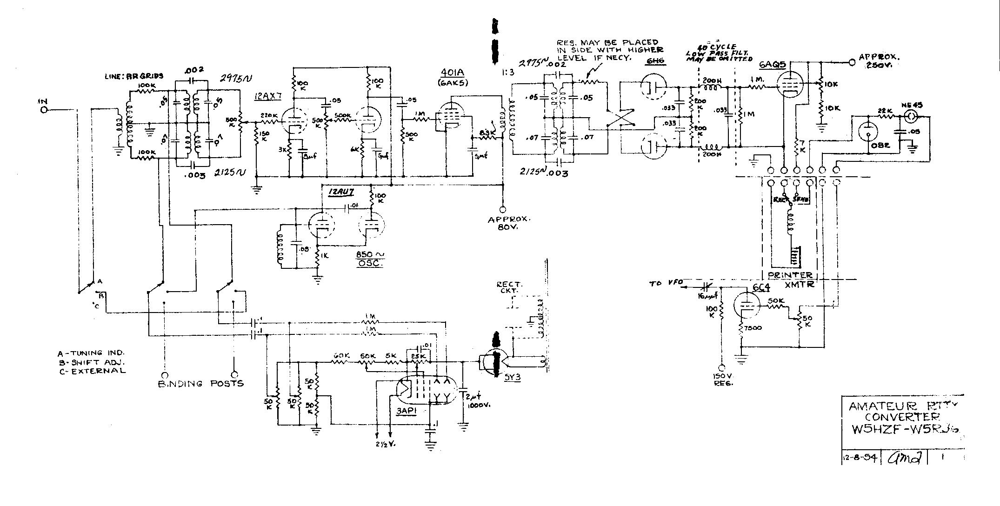

Here is the diagram of the converter which Arlan and I worked out. Believe there is room for improvement from the standpoint of selective fading. Have been thinking of including the Gates circuit, from the output of the discriminator transformer on throught the ouput tube. The values shown for the tuned circuits give a band-pass that is a good compromise. My tuned circuits use larger capacitors, 0.2 and 0.15 mfd. to get narrower response, and I have a five position switch with taps on the coils in both the input and discriminator filters (on the high tone only) to take care of the signals that do not have the correct shift. The tapped portions of the coil consist of five turns between each switch point. The capacitors remain the same. Of course you could change them instead of the tapped coils.
